1 Primeiro acesso
- Abra o link do app no Chrome (Android) ou no Safari (iPhone) e toque em Instalar agora. No iPhone: Compartilhar → Adicionar à Tela de Início.
- Abra o app pelo ícone. Digite a matrícula e a senha provisória que a gerência mandou e toque em Entrar. Esta etapa precisa de internet.
- Crie a sua senha (pelo menos 8 caracteres).
- Quando o celular perguntar, permita a localização: o turno guarda onde começou e terminou.
Depois de entrar, o app funciona sem internet. Em celular de outra pessoa ou compartilhado, toque em Sair (aba Status) ao terminar. No aparelho da base, cada login vê só os próprios registros e os dos turnos de que participou. Esqueceu a senha? Peça uma nova à gerência.
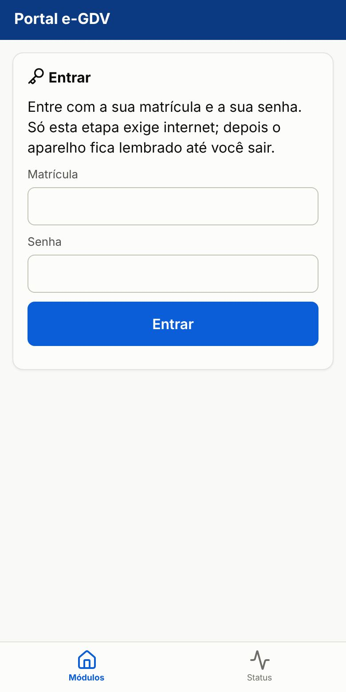
2 Tela inicial e sua escala
Quando a coordenação publica a escala de plantão com o seu nome, o app mostra o aviso Sua escala de plantão: BVA, período, dia do plantão e equipe. Toque em Entendi. O aviso volta só se a escala mudar.
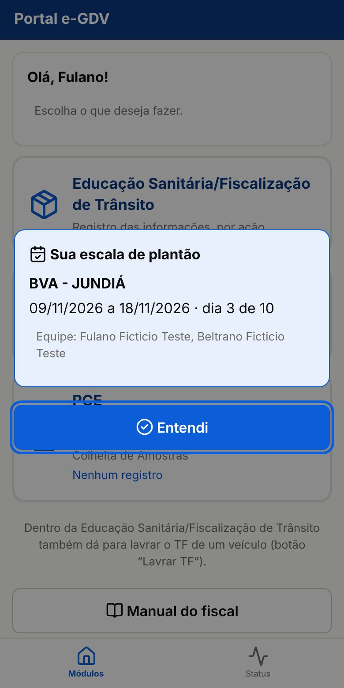
A tela inicial mostra os módulos liberados para você:
- Educação Sanitária/Fiscalização de Trânsito: o turno na barreira, os veículos e os documentos do turno.
- Termo de Fiscalização de Barreira: os TFs avulsos e a lista dos seus TFs.
- PCE: levantamentos e termos de colheita no campo.
Se um módulo não aparece, ele não está liberado para o seu login: fale com a gerência.
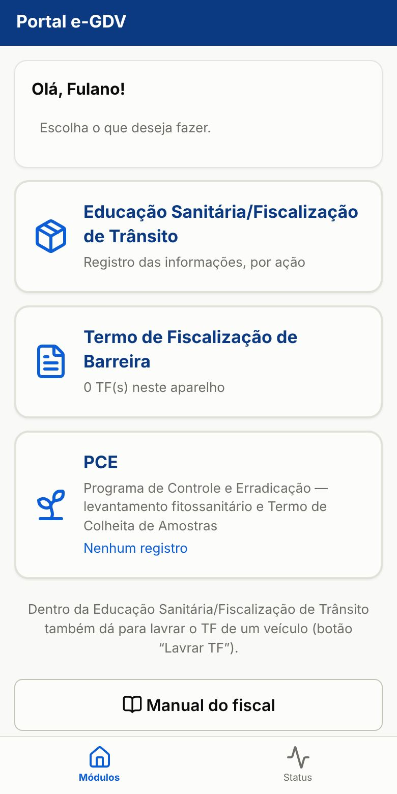
3 Abrir o turno
- Toque em Educação Sanitária/Fiscalização de Trânsito.
- Digite o nº do Termo de Fiscalização do turno. A letra vem sozinha: o 1º turno com esse nº na BVA é A, o 2º B, e assim por diante.
- Escolha o Tipo de posto (Fixa ou Volante) e o Local (a BVA).
- Confira o seu nome e toque em Iniciar turno.
Se já houver turno aberto na BVA, não abra outro: entre no do colega (veja o passo 5). Na BVA fixa com escala publicada para o dia, só os fiscais escalados abrem ou entram em turno; para cobrir um plantão, peça à coordenação para ajustar a escala.
Digitou o nº errado? No cartão do turno, toque em Corrigir nº (onde a gerência liberou).
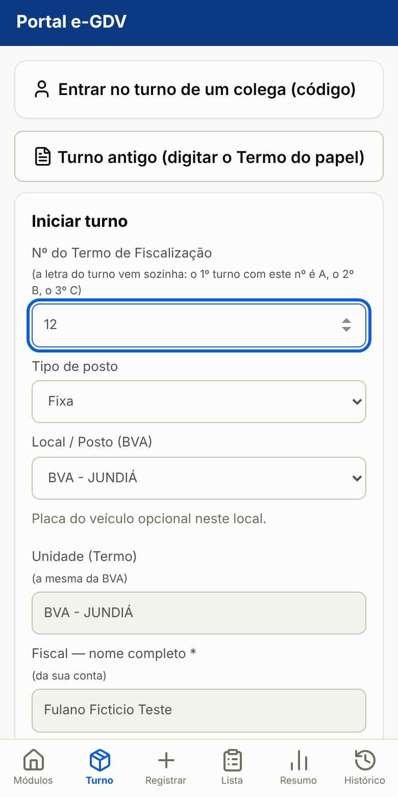
4 Registrar veículos
Para cada veículo parado:
- Toque em Registrar veículo (ou em Registrar, no menu de baixo).
- Digite a placa (obrigatória só na BVA CEASA) e escolha o tipo do veículo.
- Digite quantas pessoas receberam educação sanitária no veículo (vazio conta como 0).
- Se souber, preencha a origem e o destino. Toque em Salvar no fim da tela.
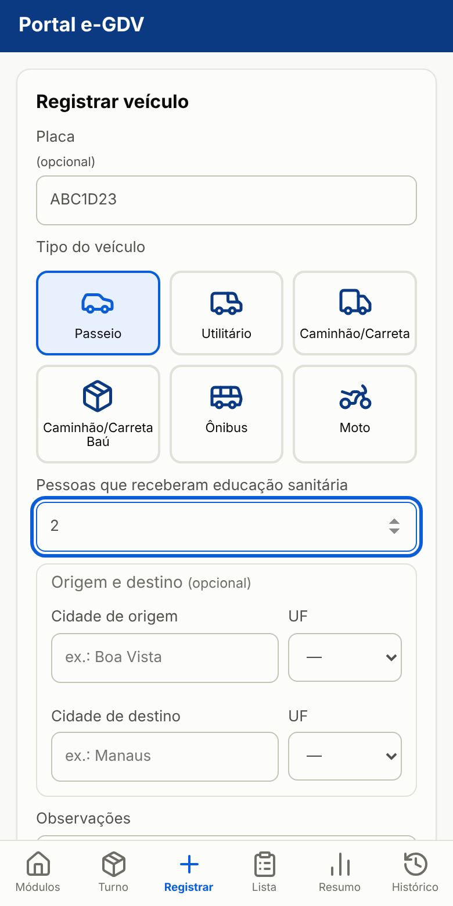
O cartão do turno mostra quantos veículos já foram registrados. Dali você chega a tudo:
- Lista de veículos: corrigir, excluir ou lavrar TF de um veículo.
- Resumo e documentos: total por tipo e o botão para encerrar o turno.
- Convidar colega para este turno: veja o passo 5.
Turno esquecido aberto é encerrado sozinho depois de 12 horas.
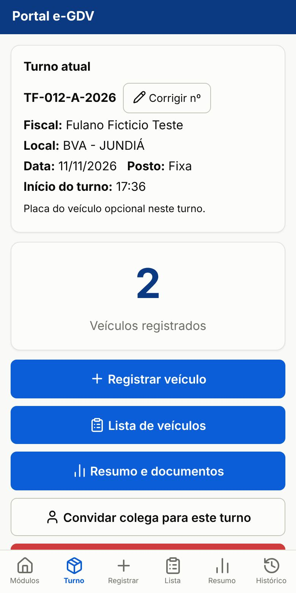
5 Trabalhar com um colega no mesmo turno
Cada fiscal usa o próprio login, mas todos lançam no mesmo turno, e o nome de cada um entra no Termo.
Na BVA fixa: um toque, sem código
- O colega abre Educação Sanitária/Fiscalização de Trânsito e escolhe a mesma BVA.
- Aparece o aviso Turno em andamento nesta BVA. Ele toca em Entrar neste turno.
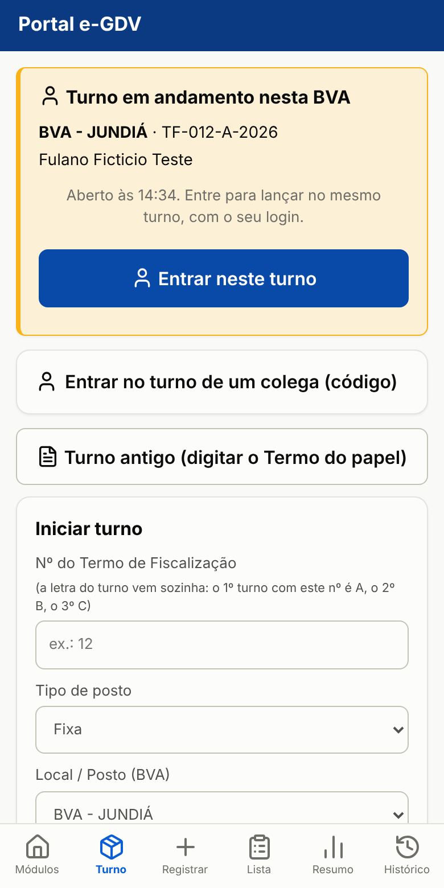
Volante ou outra situação: com código
- Quem abriu o turno toca em Convidar colega para este turno. Aparece um código de 6 números, válido por 15 minutos e para uma pessoa.
- O colega, no app dele, toca em Entrar no turno de um colega (código) e digita o código.
Entrou alguém por engano? Quem abriu o turno toca em Tirar do turno no cartão Colegas no turno (só se ele ainda não lançou nada). Os TFs lavrados no turno aparecem para todos do turno, marcados "Lavrado por…"; só quem lavrou assina ou cancela.
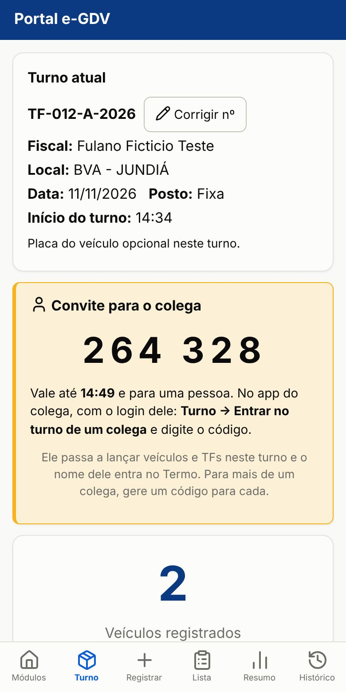
6 Lavrar o Termo de Fiscalização (TF)
- No turno, abra a Lista de veículos e toque em Lavrar TF no veículo. A placa e o local já vêm preenchidos. TF fora do turno: módulo Termo de Fiscalização de Barreira → Novo TF.
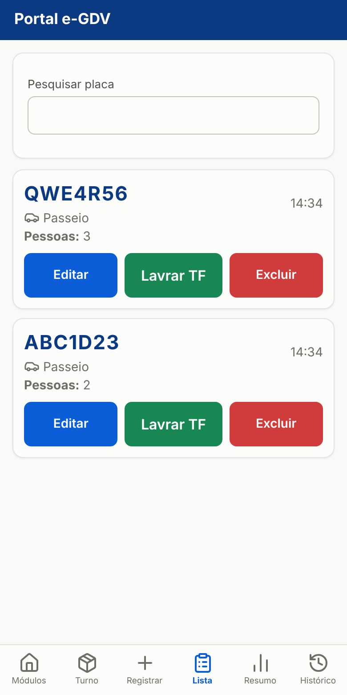
- Digite o CPF ou CNPJ. O app busca o cadastro: se já existe, os dados vêm preenchidos; se é novo, preencha nome, endereço, município e telefone. Se a pessoa ou a placa já tiveram TF, o app avisa que é reincidente.
- Preencha a origem e o destino da carga.
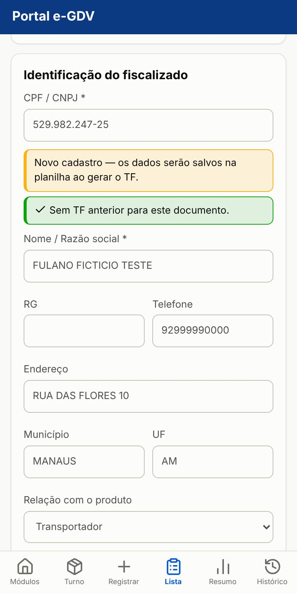
- Informe os produtos e as quantidades.
- Marque o procedimento: Liberação, Apreensão ou Rechaço. A constatação e o enquadramento legal vêm sugeridos pela BVA, pelo sentido (entrada ou saída) e pelo produto: confira e edite se precisar. Na liberação o enquadramento fica em branco.
- Se quiser, tire fotos.
Auto de infração: marque Auto de infração no TF (qualquer procedimento). Os fatos, o enquadramento e os dados do condutor vêm do TF e podem ser editados; o nº segue a sequência de autos da BVA no ano. O PDF sai em 3 vias.
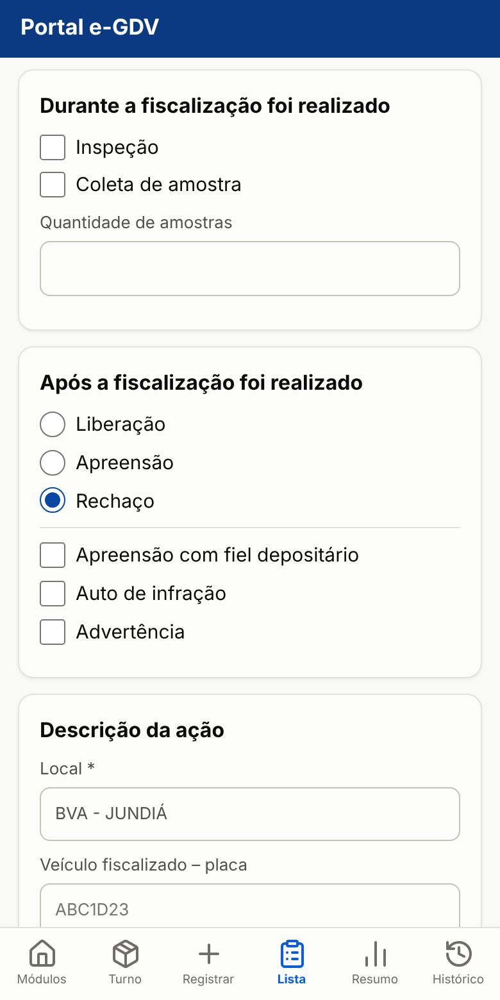
- Toque em Gerar TF. Confira o número que aparece: ele vem da planilha (ou do talão, no primeiro TF do ano). Se precisar, corrija e toque em Confirmar e gerar.
Sem internet, o número é provisório e é conferido quando o celular enviar.
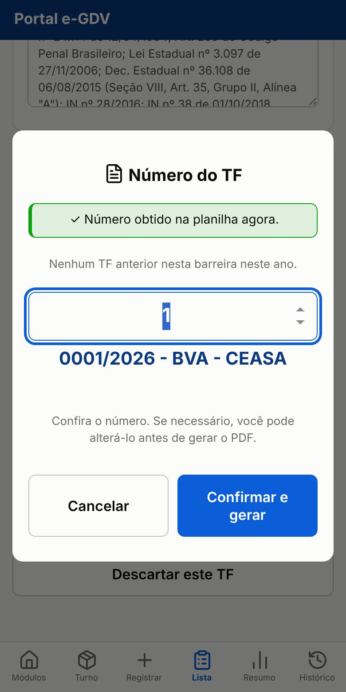
- Pronto: TF gerado. Toque em Imprimir / PDF (2 vias). Na janela de impressão, imprima direto ou escolha Salvar como PDF.
Para lavrar outro, Novo TF; para voltar ao turno, Voltar à lista de veículos.
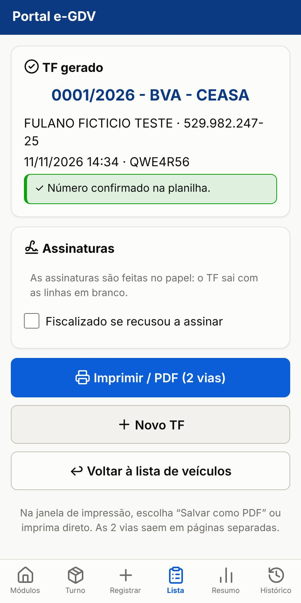
7 Encerrar o turno e o Termo do turno
- No fim do plantão, toque em Resumo e documentos. Confira o total por tipo de veículo.
- Toque em Encerrar turno e confirme.
Cancelar turno serve só para turno aberto por engano.
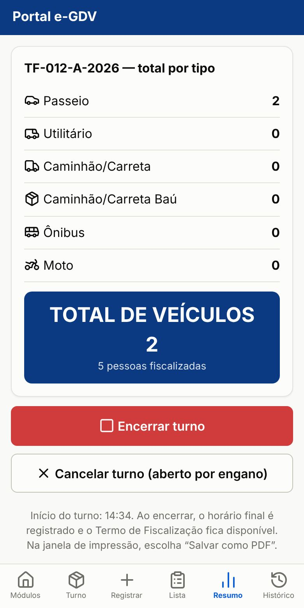
- Espere a mensagem Turno encerrado com "Recebido pela planilha". Se ficar "aguardando envio", abra o app de novo quando tiver internet.
- Toque em Termo de Fiscalização (PDF) para imprimir ou salvar o Termo do turno. Ele traz os nºs dos TFs lavrados no turno (os seus e os dos colegas) e as medidas tomadas.
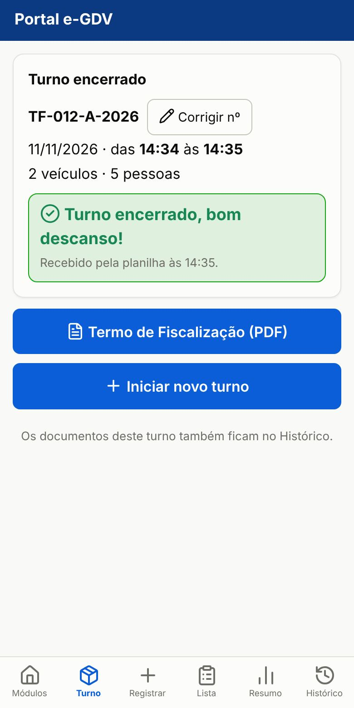
Os turnos antigos ficam no Histórico (menu de baixo): escolha o período e toque em Termo no turno. Ali também ficam Corrigir nº e o Relatório da equipe.
O turno não aparece neste aparelho (ex.: foi aberto no outro celular)? Toque em Buscar meus turnos na planilha.
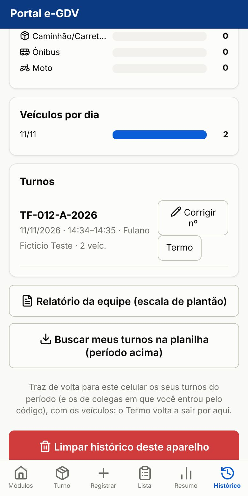
8 PCE
No primeiro acesso ao PCE, informe seus dados (nome, cargo, matrícula e lotação) e toque em Salvar. Eles vão para cada termo.
- Antes de viajar (com internet): em Produtores, Dados para o campo, baixe os municípios da viagem. Sem internet, a busca por CPF, nome ou propriedade usa esses dados. Ao voltar, Apagar do aparelho.
- Produtor: em Produtores, busque pelo CPF/CNPJ ou nome; se não houver, Novo produtor com a propriedade e os frutos dela (cultura, área, plantas). Cada dado é pedido uma vez só.
- Novo termo: em Termos, Novo termo procura o produtor no aparelho e, com internet, na planilha.
- Visita: na tela do produtor, Nova visita. Marque os frutos avaliados; para cada um, o resultado de cada praga (as de registro já vêm em "Não tem"); amostra e fotos; ações; assinaturas. Concluir visita gera um Termo de Fiscalização por programa, inclusive sem detecção.
- Amostra coletada: o Termo de Colheita de Amostras sai na mesma visita. Em Termos, filtre "Termos de Fiscalização com amostra coletada".
- Fichas oficiais: na tela do produtor, uma por programa da propriedade, já preenchida com o cadastro e a última visita. Não impede o Termo.
- Produtor que não assina: no passo das assinaturas, marque a opção e tire a foto do produtor segurando um documento com foto.
- Via do produtor: Enviar ao produtor gera o PDF para mandar pelo WhatsApp, mesmo sem internet.
- Levantamentos antigos: continuam na tela do produtor, só para ler e gerar o PDF.
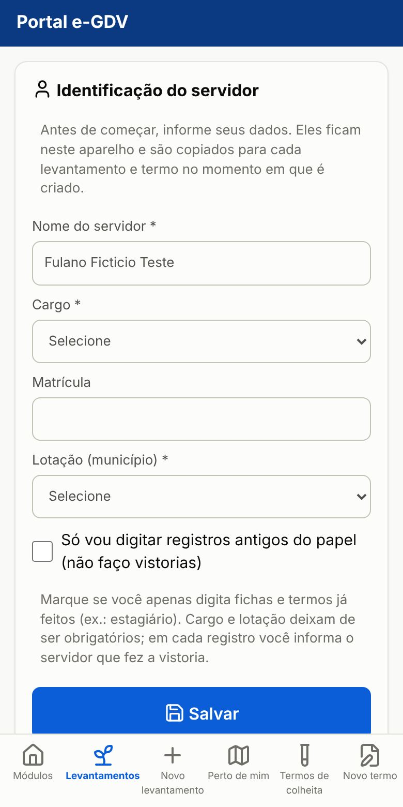
9 Escala e relatório da equipe
- Sua escala: aparece no aviso ao abrir o app (passo 2). A coordenação (ou a gerência, no painel) informa também o nº da equipe e o responsável.
- Relatório da equipe (prestação de contas do convênio): no Histórico, toque em Relatório da equipe (escala de plantão) e escolha a escala. Os números (veículos, TFs, apreensões, kg, rechaços e educação sanitária) somam todos os turnos da equipe no período.
- Responsável pela equipe: confere os números, corrige os kg se precisar, confere os termos de repasse, ajusta local, objetivo, deslocamento e OBS e toca em Salvar. Os demais da equipe veem o mesmo relatório, sem editar.
- Termo de repasse (na CEASA, Termo de destruição, no Aterro Sanitário de Manaus): os produtos apreendidos nos TFs da equipe já vêm listados. O responsável confere, tira ou acrescenta itens, ajusta o nº, o local e a data, o órgão que recebe e o enquadramento legal, toca em Salvar e gera o PDF em Termo de repasse (PDF).
- Todos podem tocar em Gerar relatório (PDF): a 1ª folha traz o relatório; a 2ª, as assinaturas de cada servidor e do responsável. Precisa de internet.
10 Sem internet
- Tudo fica guardado no celular e é enviado sozinho quando a conexão voltar. O selo no topo mostra a situação; toque nele para enviar agora.
- Não desinstale o app nem limpe os dados do navegador com algo aguardando envio: é assim que se perdem dados.
- No iPhone, abra o app com internet para enviar.
11 Problemas comuns
- "Matrícula ou senha incorreta"
- Confira as duas. Depois de várias tentativas, espere 15 minutos.
- "Sem autorização" ou um módulo sumiu
- Ele não está liberado para você. Fale com a gerência.
- "Acesso revogado" ou "sessão inválida"
- Entre de novo. O que não foi enviado continua guardado.
- "Nova versão do app disponível"
- Toque em Atualizar agora, de preferência com tudo enviado.
- "Você não está na escala de plantão desta BVA"
- Na BVA com escala publicada, só os escalados abrem ou entram em turno. Peça à coordenação para ajustar a escala.
- Localização não aparece
- Ligue o GPS e permita a localização para o app.
- Toquei em imprimir e nada aconteceu (celular)
- Espere aparecer Documento pronto e toque em Imprimir; na janela, escolha Salvar como PDF.
- Turno não aparece no computador
- Confira se entrou com a mesma matrícula do celular e use Buscar meus turnos na planilha no Histórico.